The Hutt Burger · 27 receitas · versão para revisão de 28/11/2026
Como ler
19 das 27 fichas foram conferidas com 118 fotos de produção pesadas na balança (peso líquido). Em cada ficha, "pesado" ao lado do ingrediente mostra o que foi para a balança; a nota amarela diz onde a produção e o documento discordam.
As fotos são da Larissa Raiane, enviadas ao grupo "Ficha técnica. 02" em 04–05/08/2021 e 13–17/11/2022. A data é a do envio; o WhatsApp apaga a data da câmera. O grupo "Ficha Técnica" de 23/11/2025 só reenviou fotos de 2021.
A Calabrese também foi validada pelo lote registrado no app em 22/11/2026.
Cebola Caramelizada na Cerveja O rendimento bate com a ficha (2,055 kg), mas três pesos não: molho inglês 600 g (ficha 300 ml), shoyu 299 g (ficha 200 ml) e açúcar mascavo 100 g (ficha 350 g).
Creme de Gorgonzola A ficha segue a produção de 2022, menos a água (ficha 1,000 L, pesado 0,640 kg).
Ketchup Picante As duas produções usaram cerca de 120 g de cada condimento, não os 80 g da ficha (+50%).
Ketstarda A ficha inverteu as quantidades: diz ketchup 1,000 kg e mostarda 1,500 kg (soma 2,800 kg para render 2,453 kg).
Maionese de Cebola Roxa A produção de 2022 é menor que a ficha: maionese 1,001 kg (ficha 1,580 kg), pimenta verde 91 g (ficha 50 g), rendimento 1,649 kg (ficha 2,490 kg).
Maionese de Bacon A produção usou 1 cebola (0,296 kg) e 2,200 kg de maionese e rendeu 2,714 kg.
Maionese de Cebolinha O lote foi de 3 receitas para maionese (9 kg), alcaparras (445 g) e pasta de alho (224 g), mas a salsa com cebolinha (647 g) é a de 1 receita.
Maionese de Leite O rendimento bate (1,314 kg), mas o leite em pó pesado foi 200 g; a ficha diz 100 g.
Maionese de Tomate Seco O lote foi de 2 receitas (tomate 402 g, caldo 103 g) e rendeu 3,004 kg, o que indica cerca de 2,5 kg de maionese, ou 1,25 kg por receita.
Maionese Defumada O modo de preparo anotado no grupo resolve a contradição do documento: o alho vai 5 minutos ao micro-ondas, depois tudo é batido no liquidificador, sem fritar.
Maionese Vegana Rende cerca de 37% menos que a soma dos ingredientes, sem cozimento.
Maionese de Cerveja Pesos fora do padrão ("1 Kg", "1 Und", "1.503 g") e cebola por unidade, sem peso.
Farofa de Bacon O rendimento (2.520 g) é maior que a soma dos ingredientes (cerca de 1.710 g).
Ketchup de Acerola Pesos fora do padrão; cebola e tomate por unidade, sem peso.
1
Barbecue
Sem registro de produção
Rendimento da ficha12,000 kg
Validade5 dias
Ingredientes da ficha
Açafrão em Pó211 g
Água100 ml
Amido de Milho100 g
Caldo de Carne302 g
Chilli em Pó137 g
Fumaça Líquida300 ml
Goiabada Pastosa5,000 kg
Molho Inglês300 ml
Mostarda3,000 kg
Sal150 g
Tomate Pelati2,590 kg
Vinagre de Maçã2,470 L
Preparo
Adicione o tomate pelati em uma panela grande.
Adicione a goiabada pastosa, vinagre e mostarda e misture bem.
No bowl, adicione molho inglês, açafrão, chilli em pó, sal, caldo de carne e misture bem.
Depois adicione tudo na panela e aos poucos adicione no liquidificador para bater, em seguida coloque em outra panela o líquido formado.
Entre com a fumaça líquida.
Leve ao fogo baixo por 30 minutos até cozinhar.
Misture o amido de milho com 100ml de água e coloque no barbecue.
Deixe ferver por 10 minutos e desligue o fogo.
Armazene sob refrigeração (máximo 2ºC) por 5 dias.
2
Base Vegana
Sem registro de produção
Rendimento da ficha1,100 kg
Validade12 dias
Ingredientes da ficha
Alho Batido50 g
Capim Limão100 g
Limãounidade1 un
Molho Inglês500 ml
Shoyu250 ml
Preparo
Adicione todos os ingredientes em um pote e misture bem.
3
Calabrese
Validada
Rendimento da ficha4,763 kg
Rendimento pesado4,198 kg
Validade7 dias
Em 2022 a receita usou 3,006 kg de maionese e o pote pesou 4,198 kg, 0,866 kg abaixo da soma dos ingredientes; provavelmente parte da produção ficou fora do pote pesado.
Ingredientes da ficha
Calabresa1,234 kgpesado 1,234 kg
Cebola Roxa3 unidades564 gpesado 0,564 kg
Maionese2,800 kgpesado 2,800 kg (2026) · 3,006 kg (2022)
Lote registrado no app por Larissa Raiane, Freguesia, 22/11/2026: maionese reduzida para 2,800 kg por receita e rendimento de 4,763 kg. A ficha atual segue esse lote.
Preparo
Corte a calabresa e a cebola roxa em pedaços médios.
Frite um pouco numa panela e reserve.
Quando a calabresa esfriar, junte com os demais ingredientes num pote e misture bem.
Bata no cutter até formar uma pasta.
4
Cebola Caramelizada na Cerveja
Produção diverge da ficha
Rendimento da ficha2,055 kg
Rendimento pesado2,055 kg
Validade5 dias
O rendimento bate com a ficha (2,055 kg), mas três pesos não: molho inglês 600 g (ficha 300 ml), shoyu 299 g (ficha 200 ml) e açúcar mascavo 100 g (ficha 350 g). A ficha parece ter trocado valores ao ser transcrita.
Adicione a cebola cortada em uma panela e coloque os demais ingredientes.
Em fogo baixo, deixe ela ferver até reduzir.
5
Cheddar Cremoso
Sem registro de produção
Rendimento da ficha10,967 kg
Validade12 dias
Ingredientes da ficha
Água5,000 L
Cheddar Fatiado3 Peças6,081 kg
Creme de Leite800 g
Leite em Pó400 g
Preparo
Adicione a água em uma panela grande.
Adicione o creme de leite e o leite em pó e mexa bem.
Corte o queijo em quadrados pequenos e adicione na panela.
Leve em fogo baixo e mexa bem até dissolver e ficar consistente.
Armazenar sob refrigeração (máximo 2ºC) por 12 dias.
6
Compota de Bacon
Validada
Rendimento da ficha7,532 kg
Rendimento pesado1,563 kg
Validade12 dias
Rendimento de 7,563 kg (6 kg + 1,563 kg) contra 7,532 kg da ficha. Os 6 kg do primeiro pote foram informados na legenda: o visor aparece apagado, provavelmente acima da capacidade de 6 kg da balança. Validade: o cabeçalho diz 12 dias e o modo de preparo, 3.
Ingredientes da ficha
Açúcar Mascavo651 gpesado 0,651 kg
Alho batido100 gpesado 0,100 kg
Bacon em cubos5,000 kgpesado 5 × 1 kg
Chilli em pó100 gpesado 0,100 kg
Ketchup2,000 kgpesado 2 kg
Tomate pelati2,033 kgpesado 2,033 kg
Vinagre Balsâmico1,500 Lpesado 1,5 L
Produção de 05/08/2021 · Larissa Raiane
Bacon em cubos (5 pacotes de 1 kg)sem pesagem05/08/2021 · foto 053
Molho batido no liquidificadorsem pesagem05/08/2021 · foto 066
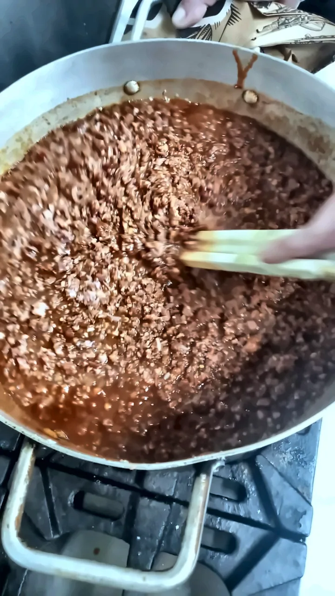
Molho sobre o bacon cozidosem pesagem05/08/2021 · foto 067Reduzindo 30 min em fogo baixosem pesagem05/08/2021 · foto 069Rendimento: pote 1 (6 kg, visor apagado)sem pesagem05/08/2021 · foto 075Rendimento: pote 21,563 kg05/08/2021 · foto 076
Preparo
Processe todo o bacon em cubos até ficar bem desfiado.
Leve o bacon ao fogo para cozinhar.
No liquidificador, bata o tomate pelati, o alho, o chilli, o açúcar mascavo e o vinagre balsâmico.
Adicione o ketchup e deixe bater bem.
Com o bacon cozido, adicione o molho e deixe ferver.
Reduza em fogo baixo por 30 minutos e desligue.
Pese os potes prontos e anote o rendimento.
7
Creme de Gorgonzola
Produção diverge da ficha
Rendimento da ficha3,000 kg
Validadenão informada
A ficha segue a produção de 2022, menos a água (ficha 1,000 L, pesado 0,640 kg). O amido de milho (100 g) não aparece em nenhuma das duas produções. Em 2021 foi usada uma peça inteira de 3,082 kg e o creme rendeu 4,862 kg. Validade: o cabeçalho não informa; o modo de preparo diz 3 dias.
Ingredientes da ficha
Água1,000 Lpesado 0,640 kg (2022) · 0,991 kg (2021)
Amido de Milho100 g
Creme de Leite400 gpesado 0,400 kg (2022) · 0,600 kg (2021)
Gorgonzola1,500 kgpesado 1,500 kg (2022) · 3,082 kg (2021)
Leite em Pó200 gpesado 0,200 kg (2022) · 0,241 kg (2021)
Produção de 04/08/2021 · Larissa Raiane
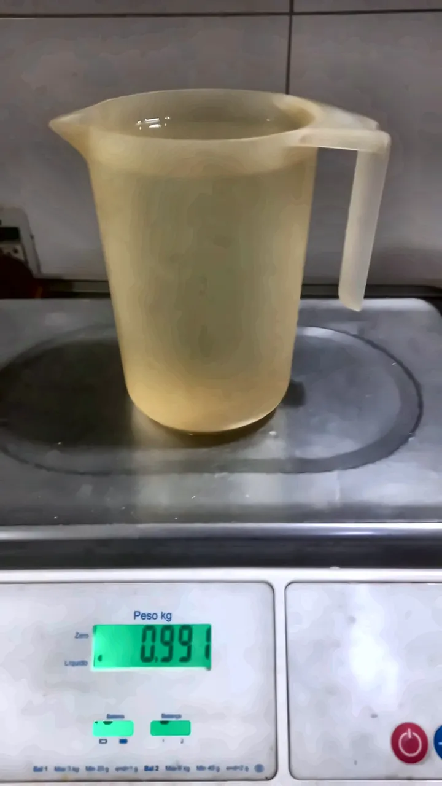
Água0,991 kg04/08/2021 · foto 030
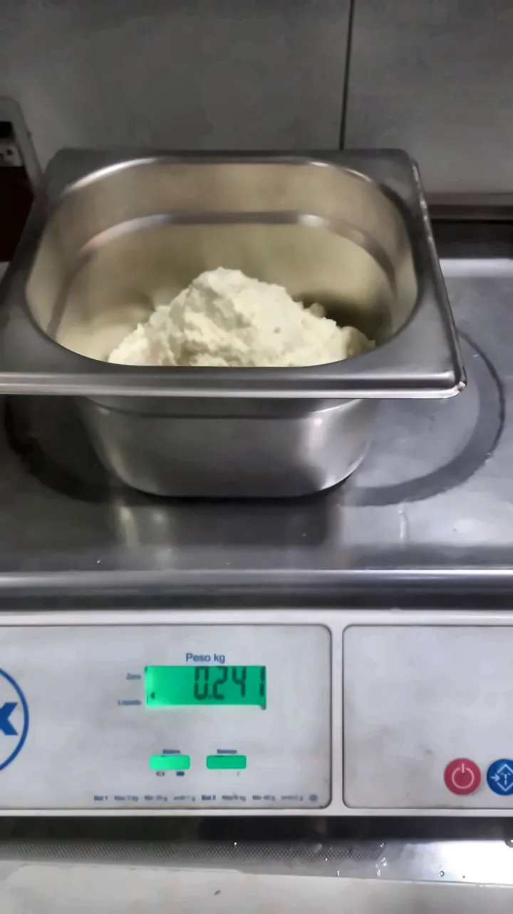
Leite em pó0,241 kg04/08/2021 · foto 031Gorgonzola (1 peça)3,082 kg04/08/2021 · foto 032Gorgonzola em pedaços no liquidificadorsem pesagem04/08/2021 · foto 033Creme de leite (3 × 200 g)sem pesagem04/08/2021 · foto 034Fervendo em fogo baixosem pesagem04/08/2021 · foto 036Pronto (rendimento)4,862 kg04/08/2021 · foto 050
No liquidificador, coloque a água, o leite em pó e o gorgonzola em pedaços pequenos.
Adicione o creme de leite e bata.
Passe para uma panela e deixe em fogo baixo até ferver.
Pese o pote pronto e anote o rendimento.
8
Ketchup Picante
Produção diverge da ficha
Rendimento da ficha2,000 kg
Rendimento pesado2,121 kg
Validade12 dias
As duas produções usaram cerca de 120 g de cada condimento, não os 80 g da ficha (+50%). Proposta: chilli 120 g e páprica picante 120 g para 2 kg de ketchup, rendimento 2,120 kg. Validade: o cabeçalho diz 12 dias e o modo de preparo, 7.
Ingredientes da ficha
Chilli em Pó80 gpesado 0,120 kg · 0,125 kg
Ketchup2,000 kgpesado 2 kg · 1,880 kg
Páprica Picante80 gpesado 0,120 kg · 0,135 kg
Produção de 04/08/2021 · Larissa Raiane
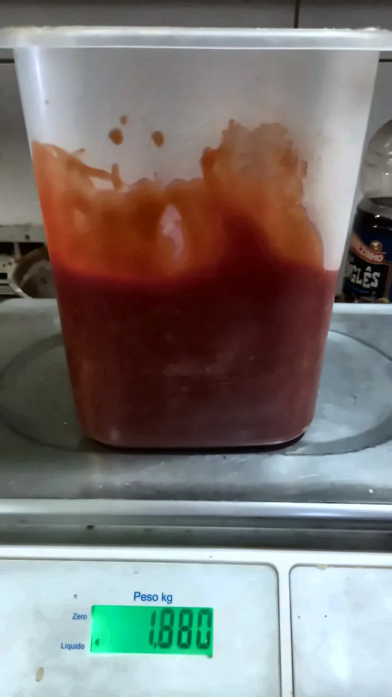
Ketchup1,880 kg04/08/2021 · foto 005Chilli em pó0,125 kg04/08/2021 · foto 006Páprica picante0,135 kg04/08/2021 · foto 007Misturando com o fuêsem pesagem04/08/2021 · foto 009Pronto (rendimento)2,130 kg04/08/2021 · foto 011
Pese o ketchup no pote, com a balança zerada no pote vazio.
Pese o chilli em pó e a páprica picante no bowl.
Adicione os condimentos ao ketchup e misture bem com o fuê.
Pese o pote pronto e anote o rendimento.
Armazene sob refrigeração (máximo 2 °C).
9
Ketstarda
Produção diverge da ficha
Rendimento da ficha2,453 kg
Rendimento pesado2,453 kg
Validade5 dias
A ficha inverteu as quantidades: diz ketchup 1,000 kg e mostarda 1,500 kg (soma 2,800 kg para render 2,453 kg). A produção usou ketchup 1,204 kg e mostarda 1,010 kg, que fecham com o rendimento.
Em um pote adicione os ingredientes e misture bem com um fuê até dissolver tudo.
Armazenar sob refrigeração (máximo 2ºC) por 5 dias
10
Maionese de Alho com Lemon Pepper
Erro no documento
Rendimento da ficha2,615 kg
Validade3 dias
Rende 2,615 kg com cerca de 2,36 kg de ingredientes.
Ingredientes da ficha
Água500 ml
Leite em Pó100 g
Lemon Pepper100 g
Óleo1,800 L
Preparo
Adicione no liquidificador a água e o leite em pó, e dissolva bem.
Adicione aos poucos o óleo até ficar com textura cremosa.
Adicione o Lemon Pepper por último e misture bem com um pão duro, no liquidificador.
Armazenar sob refrigeração (máximo 2ºC) por 3 dias.
11
Maionese de Cebola Roxa
Produção diverge da ficha
Rendimento da ficha2,490 kg
Rendimento pesado1,649 kg
Validade3 dias
A produção de 2022 é menor que a ficha: maionese 1,001 kg (ficha 1,580 kg), pimenta verde 91 g (ficha 50 g), rendimento 1,649 kg (ficha 2,490 kg). A cebola roxa não foi pesada à parte; pela diferença, foram cerca de 0,557 kg. As 3 cebolas de 0,564 kg fotografadas no mesmo dia estão legendadas como da Calabrese.
Ingredientes da ficha
Cebola roxa± 3 unidades860 g
Maionese1,580 kgpesado 1,001 kg
Pimenta verde em conserva50 gpesado 0,091 kg
Produção de 14/11/2022 · Larissa Raiane
Maionese1,001 kg14/11/2022 · foto 111
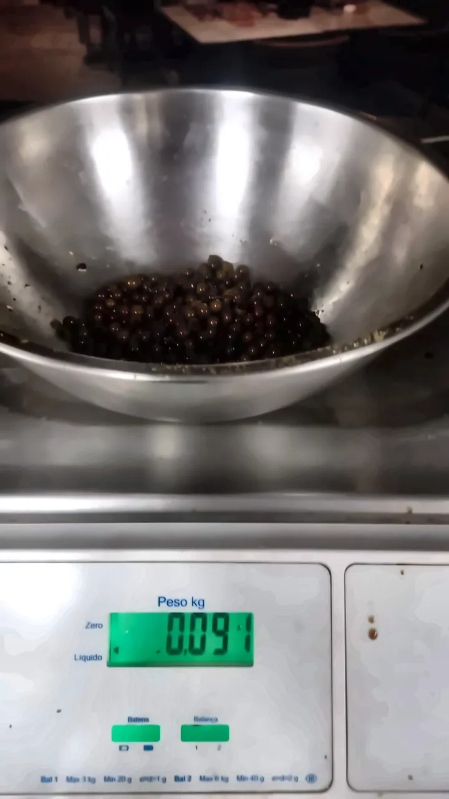
Pimenta verde em conserva0,091 kg14/11/2022 · foto 113
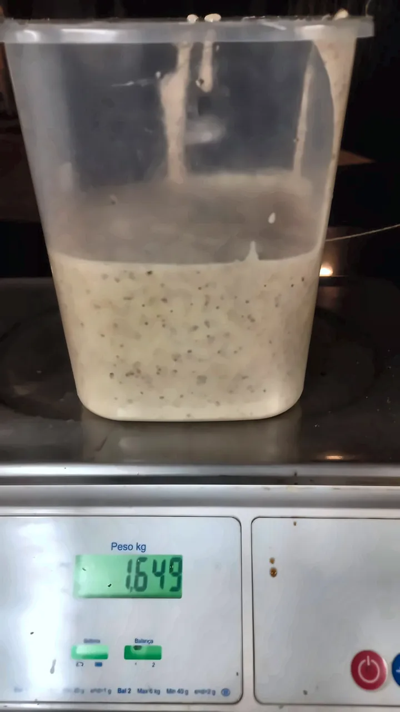
Pronto (rendimento)1,649 kg14/11/2022 · foto 114
Preparo
Corte a Cebola roxa em 4 pedaços e adicione junto com os demais ingredientes no liquidificador, até dissolver bem.
Armazenar sob refrigeração (máximo 2ºC) por 3 dias.
12
Maionese Clássica
Validada
Rendimento da ficha2,690 kg
Rendimento pesado2,691 kg
Validade5 dias
Ingredientes da ficha
Alho100 gpesado 0,102 kg
Cream Cheese400 gpesado 0,422 kg
Ketchup400 gpesado 0,401 kg
Mix de Legumes em conserva600 gpesado 0,601 kg
Maionese1,200 kgpesado 1,210 kg
Produção de 16/11/2022 · Larissa Raiane
Mix de legumes em conserva0,601 kg16/11/2022 · foto 135
Adicione tudo no liquidificador e deixe bater até misturar bem.
Armazenar sob refrigeração (máximo 2ºC) por 5 dias.
13
Maionese de Bacon
Produção diverge da ficha
Rendimento da ficha4,296 kg
Rendimento pesado2,714 kg
Validade5 dias
A produção usou 1 cebola (0,296 kg) e 2,200 kg de maionese e rendeu 2,714 kg. A ficha pede 3 cebolas (880 g) e 3,000 kg de maionese, com rendimento de 4,296 kg.
Cebola roxa (1 unidade, em 4 pedaços)0,296 kg05/08/2021 · foto 072Cebola reduzindo com o baconsem pesagem05/08/2021 · foto 073No cutter com a maionesesem pesagem05/08/2021 · foto 077Batendo até processarsem pesagem05/08/2021 · foto 078Maionese (2,200 kg)sem pesagem05/08/2021 · foto 080Pronto (rendimento)2,714 kg05/08/2021 · foto 079
Preparo
Frite 1 kg de bacon fatiado (ou em cubos) numa panela.
Corte a cebola roxa em 4 pedaços e junte ao bacon.
Deixe a cebola reduzir e desligue.
Deixe esfriar completamente.
No cutter, bata o bacon com a cebola e a maionese até processar por completo.
Pese o pote pronto e anote o rendimento.
14
Maionese de Cebolinha
Produção diverge da ficha
Rendimento da ficha3,780 kg
Rendimento pesado4,012 kg
Validade5 dias
O lote foi de 3 receitas para maionese (9 kg), alcaparras (445 g) e pasta de alho (224 g), mas a salsa com cebolinha (647 g) é a de 1 receita. Rendeu 8,572 kg (4,560 + 4,012), 1,744 kg abaixo da soma dos ingredientes. Confirmar se 647 g de ervas é a medida para 1 ou para 3 receitas.
Ingredientes da ficha
Alcaparras (sem água)150 gpesado 0,445 kg
Maionese3,000 kgpesado 3 × 3 kg
Pasta de Alho80 gpesado 0,224 kg
Salsa e Cebolinha2 salsas / 3 cebs647 gpesado 0,647 kg
Produção de 04/08/2021 · Larissa Raiane
Salsa e cebolinha0,647 kg04/08/2021 · foto 013Cortando em pedaços pequenossem pesagem04/08/2021 · foto 014Maionese (3 baldes de 3 kg)sem pesagem04/08/2021 · foto 015Pasta de alho0,224 kg04/08/2021 · foto 016Alcaparras sem água0,445 kg04/08/2021 · foto 017
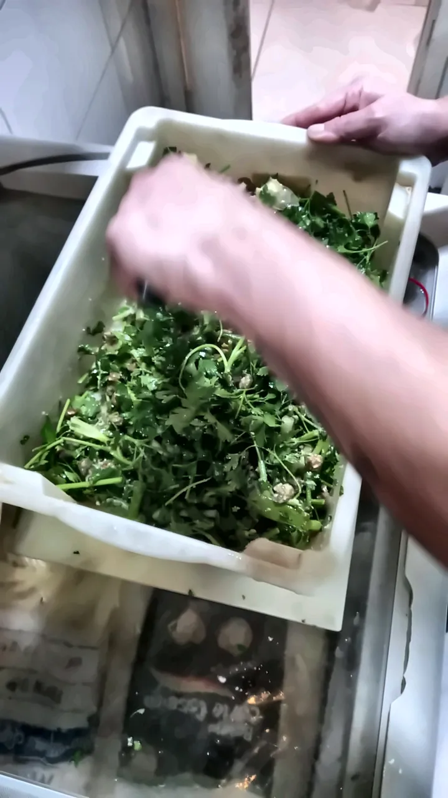
Misturando com a cebolinhasem pesagem04/08/2021 · foto 018Maionese aos poucos no liquidificadorsem pesagem04/08/2021 · foto 019Mexendo até misturarsem pesagem04/08/2021 · foto 021Rendimento: 2 potes4,560 kg04/08/2021 · foto 027
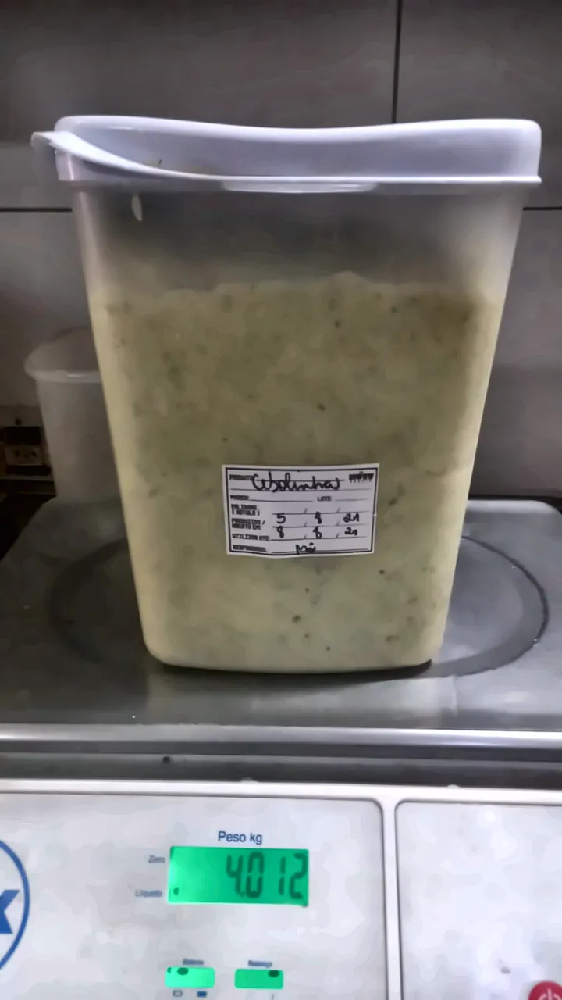
Rendimento: pote 34,012 kg04/08/2021 · foto 028
Preparo
Corte a salsa e a cebolinha em pedaços pequenos.
Misture a pasta de alho e as alcaparras (sem água) com a cebolinha.
No liquidificador, coloque as alcaparras e depois, aos poucos, a maionese.
Mexa bem até misturar.
Pese o pote pronto e anote o rendimento.
15
Maionese de Leite
Produção diverge da ficha
Rendimento da ficha1,314 kg
Rendimento pesado1,314 kg
Validade5 dias
O rendimento bate (1,314 kg), mas o leite em pó pesado foi 200 g; a ficha diz 100 g.
Ingredientes da ficha
Água400 mlpesado 400 ml
Leite em pó100 gpesado 0,200 kg
Óleo900 ml
Produção de 13/11/2022 · Larissa Raiane
Água (400 ml)sem pesagem13/11/2022 · foto 088
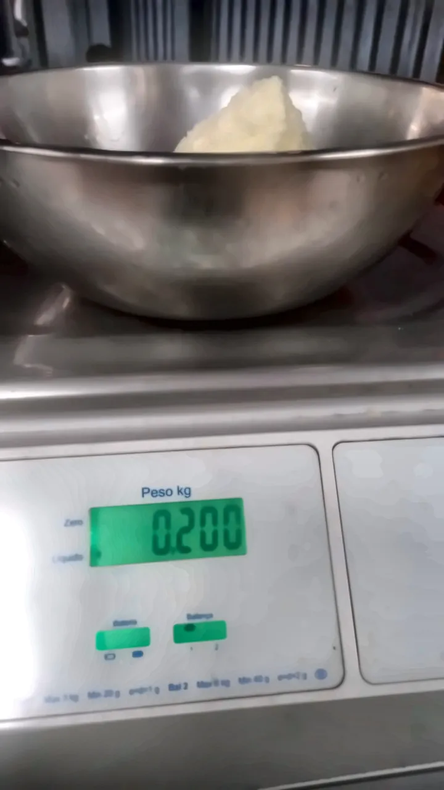
Leite em pó0,200 kg13/11/2022 · foto 089
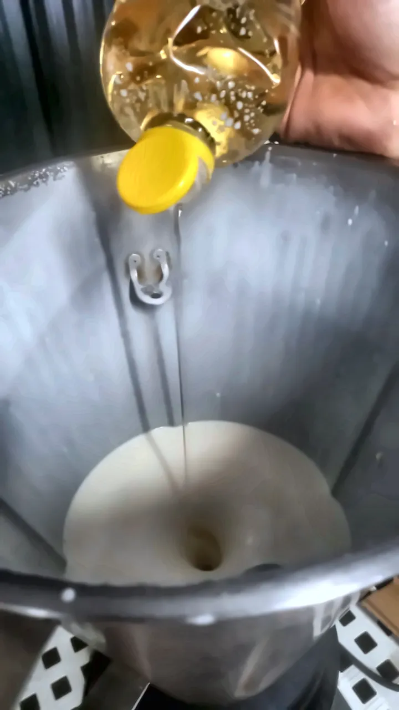
Óleo em fio no liquidificadorsem pesagem13/11/2022 · foto 090
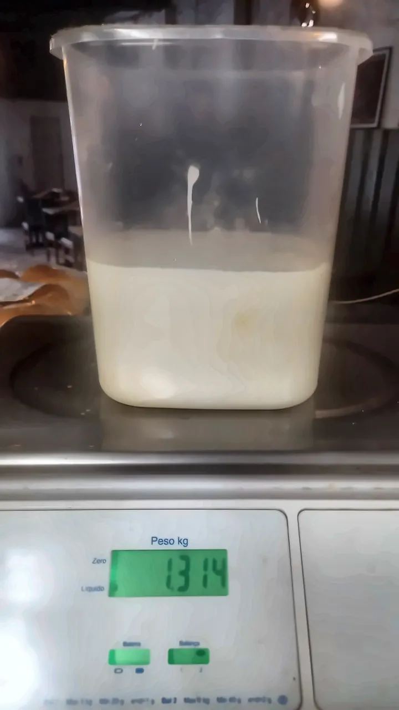
Pronto (rendimento)1,314 kg13/11/2022 · foto 091
Preparo
Adicione a água com leite em pó no liquidificador e bata até dissolver o leite.
Em seguida entre com o óleo aos poucos, até ficar cremoso.
Armazenar sob refrigeração (máximo 2ºC) por 5 dias.
16
Maionese de Tomate Seco
Produção diverge da ficha
Rendimento da ficha2,000 kg
Rendimento pesado3,004 kg
Validade5 dias
O lote foi de 2 receitas (tomate 402 g, caldo 103 g) e rendeu 3,004 kg, o que indica cerca de 2,5 kg de maionese, ou 1,25 kg por receita. A ficha diz 1,500 kg de maionese e rende 2,000 kg com 1,750 kg de ingredientes; com 1,25 kg de maionese, cada receita rende cerca de 1,500 kg.
Ingredientes da ficha
Caldo de galinha50 gpesado 0,103 kg
Maionese1,500 kg
Tomate seco200 gpesado 0,402 kg
Produção de 16/11/2022 · Larissa Raiane
Maionese (pacote de 2,8 kg)sem pesagem16/11/2022 · foto 131
Adicione tudo no liquidificador e deixe bater até misturar bem.
Armazenar sob refrigeração (máximo 2ºC) por 5 dias.
17
Maionese Defumada
Produção diverge da ficha
Rendimento da ficha2,085 kg
Rendimento pesado2,261 kg
Validade5 dias
O modo de preparo anotado no grupo resolve a contradição do documento: o alho vai 5 minutos ao micro-ondas, depois tudo é batido no liquidificador, sem fritar. Pesos diferentes da ficha: alho 345 g (ficha 200 g) e fumaça líquida 201 g (ficha 300 g). A anotação fala em 2 kg de maionese (ficha 1,500 kg); com 2,261 kg de rendimento, a maionese usada foi cerca de 1,63 kg.
No liquidificador, junte o alho, a pimenta preta (4 colheres), o caldo de galinha (2 colheres), a fumaça líquida (meio copo) e a maionese.
Bata tudo até ficar homogêneo.
Pese o pote pronto e anote o rendimento.
18
Maionese Vegana
Erro no documento
Rendimento da ficha500 g
Validade5 dias
Rende cerca de 37% menos que a soma dos ingredientes, sem cozimento.
Ingredientes da ficha
Base vegana250 ml
Leite de soja80 g
Óleo500 ml
Preparo
No liquidificador adicione a base vegana e o leite de soja e bata bem até dissolver tudo.
Em seguida entre com o óleo aos poucos até dar o ponto de consistência mais cremoso.
Armazenar sob refrigeração (máximo 2ºC) por 5 dias.
19
Maionese Verde
Validada
Rendimento da ficha670 g
Rendimento pesado0,671 kg
Validade3 dias
Pesos e rendimento conferem com a ficha. Ainda assim, 670 g de rendimento é bem menos que os cerca de 1,1 kg de ingredientes (900 ml de óleo pesam uns 830 g): confirmar se vai o óleo todo.
Adicione todos os ingredientes em um pote e mexa bem.
23
Sal da Carne
Validada
Rendimento da ficha1,500 kg
Rendimento pesado1,573 kg
Validade30 dias
A foto do rendimento está legendada como "sal da batata", mas mostra a mistura bege da carne. O pote pesou 1,573 kg, 73 g acima da soma: provável peso do pote.
Adicione todos os ingredientes em um pote e mexa bem.
25
Maionese de Cerveja
Erro no documento
Rendimento da ficha1.503 g
Validade10 dias
Pesos fora do padrão ("1 Kg", "1 Und", "1.503 g") e cebola por unidade, sem peso.
Ingredientes da ficha
Cerveja473 ml
Caldo de Carne30 g
Maionese1,000 kg
Cebola Roxaunidade1 un
Preparo
Corte a cebola em 4 pedaços e adicione na panela com caldo de carne e cerveja
deixe em fogo baixo por 15 minutos
deixe esfriar, logo em seguida adicione a maionese no liquidificador e bata bem até dissolver tudo.
26
Farofa de Bacon
Erro no documento
Rendimento da ficha2.520 g
Validade10 dias
O rendimento (2.520 g) é maior que a soma dos ingredientes (cerca de 1.710 g).
Ingredientes da ficha
Farinha Panko500 g
Caldo de Carne20 g
Bacon Cubo1,000 kg
Cebola Roxaunidade1 un
Preparo
Corte a cebola em 4 pedaços e refogue na frigideira com óleo
Deixe armazenado esfriando e frite 1 kg de bacon cubos
Deixe armazenando até esfriar
Assim que tiver frio, coloque no cutter todos os ingredientes e deixe processar bem
Em seguida adicione na panela em fogo baixo e mexa até secar bem.
27
Ketchup de Acerola
Erro no documento
Rendimento da ficha1.825 g
Validade10 dias
Pesos fora do padrão; cebola e tomate por unidade, sem peso.
Ingredientes da ficha
Polpa de Acerola800 g
Tomateunidade1 un
Pasta de alho100 g
Cebola Roxaunidade1 un
Água100 ml
Páprica Picante15 g
Açúcar Mascavo350 g
Vinagre de Maçã300 ml
Amido de Milho60 g
Preparo
Adicione Todos os ingredientes, exceto o amido, no liquidificador
Deixe bater bem, até dissolver bem todos os ingredientes
Passe para uma panela grande e deixe no fogo baixo por meia hora
Assim que levantar fervura, adicione o amido mexendo bem para dissolver.
Registros sem ficha
Molho avermelhado pesado entre o Creme de Gorgonzola e o rendimento dele. Logo depois a Larissa escreveu "Esse está no outro grupo". Pode ser o Barbecue ou o Ketchup de Banana, que não têm outro registro.
Sem legenda0,844 kg04/08/2021, 20:09–20:19 · foto 039
Pote com sobra de creme claro. Se for o resto do gorgonzola, o rendimento de 2021 sobe para 6,393 kg, acima da soma dos ingredientes (4,914 kg): por isso não foi somado.
Produção de 04/08/2021, 23:03
Sem legenda, logo após o rendimento do Creme de Gorgonzola1,531 kg04/08/2021, 23:03 · foto 051
Receita sem nome · 24/11/2022
Receita sem nome nem pesos, anotada pela Larissa: bacon fatiado bem fininho refogado até dourar; cebola cortada como crispy, refogada; tomate pelati batido um pouco; pimentão vermelho e amarelo fatiados, refogados; tempero Ana Maria e tempero Baiano, pouco, até acertar o gosto.
Fichas que faltavam em 22/08/2021
Ketstarda, Maionese de Calabresa, Ketchup de Acerola, Ketchup de Banana, Maionese Vegana, Falafel, Mostarda e Mel, Sal da Carne, Sal da Batata, Tempero de Frango. Delas, ainda não têm registro de produção: Maionese de Calabresa, Ketchup de Acerola, Ketchup de Banana, Maionese Vegana e Falafel.

 13–14/11/2022 · foto 092
13–14/11/2022 · foto 092
 13–14/11/2022 · foto 108
13–14/11/2022 · foto 108
 13–14/11/2022 · foto 109
13–14/11/2022 · foto 109
 13–14/11/2022 · foto 112
13–14/11/2022 · foto 112 13–14/11/2022 · foto 115
13–14/11/2022 · foto 115
 17/11/2022 · foto 158
17/11/2022 · foto 158 17/11/2022 · foto 159
17/11/2022 · foto 159


 05/08/2021 · foto 057
05/08/2021 · foto 057
 05/08/2021 · foto 058
05/08/2021 · foto 058 05/08/2021 · foto 059
05/08/2021 · foto 059


 05/08/2021 · foto 076
05/08/2021 · foto 076 04/08/2021 · foto 030
04/08/2021 · foto 030


 04/08/2021 · foto 050
04/08/2021 · foto 050


 14/11/2022 · foto 129
14/11/2022 · foto 129
 04/08/2021 · foto 005
04/08/2021 · foto 005
 04/08/2021 · foto 006
04/08/2021 · foto 006
 04/08/2021 · foto 007
04/08/2021 · foto 007

 04/08/2021 · foto 011
04/08/2021 · foto 011
 13/11/2022 · foto 095
13/11/2022 · foto 095

 13/11/2022 · foto 097
13/11/2022 · foto 097
 13/11/2022 · foto 098
13/11/2022 · foto 098
 13/11/2022 · foto 100
13/11/2022 · foto 100
 13/11/2022 · foto 101
13/11/2022 · foto 101
 13/11/2022 · foto 102
13/11/2022 · foto 102
 13/11/2022 · foto 103
13/11/2022 · foto 103
 14/11/2022 · foto 114
14/11/2022 · foto 114
 16/11/2022 · foto 135
16/11/2022 · foto 135 16/11/2022 · foto 137
16/11/2022 · foto 137
 16/11/2022 · foto 138
16/11/2022 · foto 138 16/11/2022 · foto 139
16/11/2022 · foto 139
 16/11/2022 · foto 140
16/11/2022 · foto 140
 16/11/2022 · foto 141
16/11/2022 · foto 141
 05/08/2021 · foto 072
05/08/2021 · foto 072


 04/08/2021 · foto 013
04/08/2021 · foto 013


 04/08/2021 · foto 016
04/08/2021 · foto 016


 04/08/2021 · foto 027
04/08/2021 · foto 027 04/08/2021 · foto 028
04/08/2021 · foto 028
 13/11/2022 · foto 091
13/11/2022 · foto 091 16/11/2022 · foto 133
16/11/2022 · foto 133 16/11/2022 · foto 134
16/11/2022 · foto 134
 16/11/2022 · foto 132
16/11/2022 · foto 132
 14/11/2022 · foto 117
14/11/2022 · foto 117

 14/11/2022 · foto 119
14/11/2022 · foto 119
 14/11/2022 · foto 121
14/11/2022 · foto 121

 17/11/2022 · foto 148
17/11/2022 · foto 148

 17/11/2022 · foto 150
17/11/2022 · foto 150 17/11/2022 · foto 151
17/11/2022 · foto 151
 17/11/2022 · foto 152
17/11/2022 · foto 152

 17/11/2022 · foto 155
17/11/2022 · foto 155
 14/11/2022 · foto 105
14/11/2022 · foto 105
 14/11/2022 · foto 106
14/11/2022 · foto 106
 14/11/2022 · foto 107
14/11/2022 · foto 107
 16–17/11/2022 · foto 142
16–17/11/2022 · foto 142 16–17/11/2022 · foto 143
16–17/11/2022 · foto 143
 16–17/11/2022 · foto 144
16–17/11/2022 · foto 144
 16–17/11/2022 · foto 145
16–17/11/2022 · foto 145
 16–17/11/2022 · foto 156
16–17/11/2022 · foto 156

 17/11/2022 · foto 173
17/11/2022 · foto 173
 17/11/2022 · foto 163
17/11/2022 · foto 163
 17/11/2022 · foto 168
17/11/2022 · foto 168
 17/11/2022 · foto 169
17/11/2022 · foto 169 17/11/2022 · foto 170
17/11/2022 · foto 170 17/11/2022 · foto 174
17/11/2022 · foto 174
 17/11/2022 · foto 176
17/11/2022 · foto 176

 04/08/2021, 20:09–20:19 · foto 038
04/08/2021, 20:09–20:19 · foto 038 04/08/2021, 20:09–20:19 · foto 039
04/08/2021, 20:09–20:19 · foto 039
 04/08/2021, 23:03 · foto 051
04/08/2021, 23:03 · foto 051